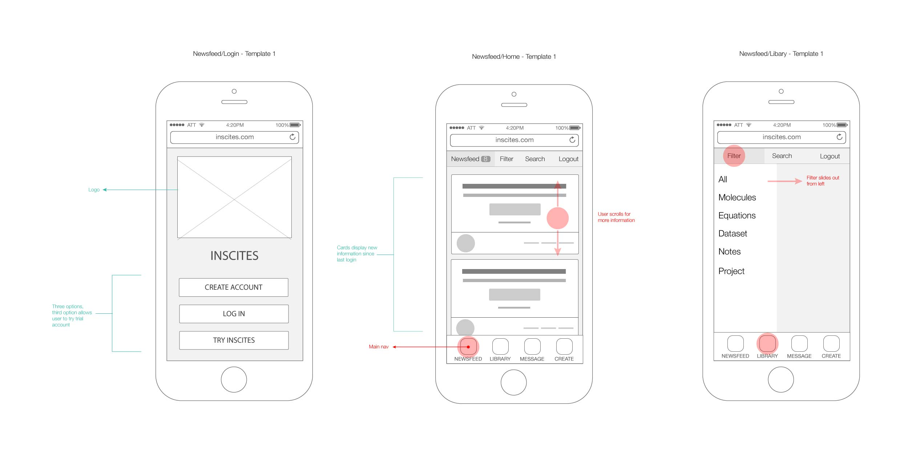

Incites primary purposes are aiding in pre-publication research and archiving knowledge on science and engineering research data post-publication.The main goals for the mobile version were to reduce the time for feedback within a group and allow easy access to the user's research data.
The Desktop version of Inscites
Our team used a daily scrum board and Trello to coordinate our research and work. The desktop version of Inscites actually contained some broken functionality. In order to avoid incorporating it into our mobile version, we conducted a heuristic analysis on the current website.
To familiarize ourselves with the tools at a researcher’s disposal, we conducted competitive analysis on Banyan, Accelrys, Hubzero and LabGuru. This showed us the most common functionality expected in applications like Inscites.
To discover how Inscites was used, we interviewed both faculty and students who have used the application for at least 6 months. We learned that they primarily wanted a way to:
Inscites utilizes technologies such as LaTEx, ChemDoodle, MathJax and jCanvas–a jQuery plugin. We researched the mobile functionality of each of these technologies and found that some worked better than others. Ultimately, our decision to exclude these from the mobile experienced was based off our user research. Users simply did not need or want exhaustive editing and analysis functionality on their phone.
In my wireframes I centered the experience around the idea of a Newsfeed containing cards. The cards are organized by the system of tags that Inscites uses on its desktop application. Each card displays a title, an image (if available), tags, and any updates or comments on the data. Clicking the card takes takes the user directly to the data set. The Newsfeed offers the ability to filter or search by data type. The Library operates in much the same way, but only accesses material the user has created or uploaded.
Inisital sketches for the mobile version of Inscites
I used Illustrator to produce high-fidelity wireframes with annotations showing interactions.
Full wireframes available upon request
The developer on our team turned my wireframes into a prototype in HTML/CSS. This allowed us to conduct user tests and implement changes very quickly. Tap the picture on a mobile phone to experience the prototype